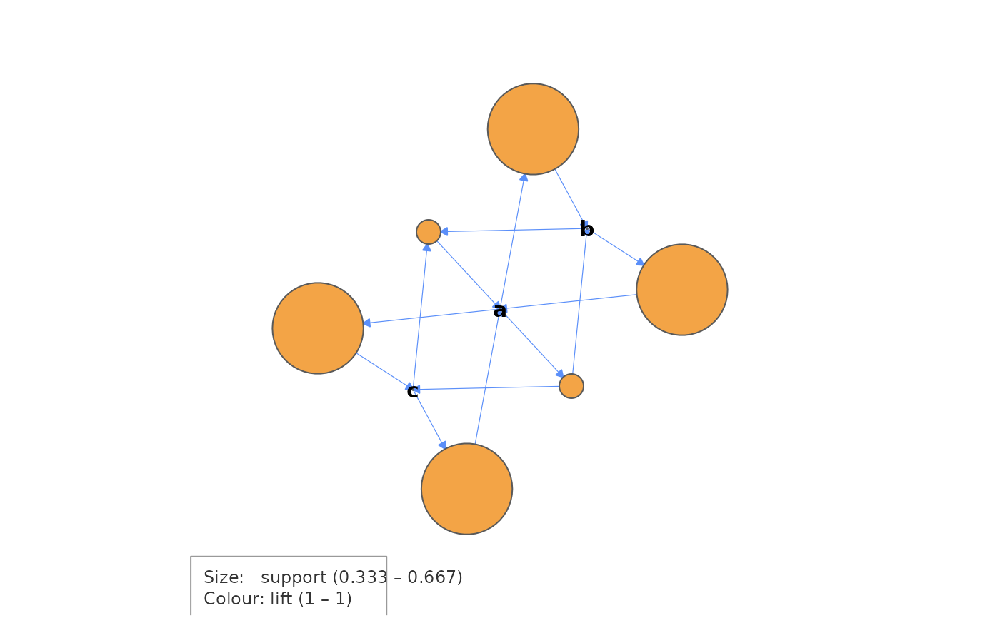

cograph's legend covers discrete groups, edge colours and a node-size
scale, but not the two continuous encodings an association-rule graph
uses. This draws that key onto the current plot after
cograph::splot() has run.
Usage
rule_key(
net,
position = c("bottomleft", "bottomright", "topleft", "topright"),
cex = 0.75
)Arguments
- net
A rule-level network from
as_network()withlevel = "rule".- position
Corner for the key:
"bottomleft"(default),"bottomright","topleft","topright".- cex
Text size. Default
0.75.
Examples
fit <- dynarules(list(c("a", "b", "c"), c("a", "b"), c("a", "c")),
min_support = 0.3, min_confidence = 0.3)
net <- as_network(fit, level = "rule")
if (requireNamespace("cograph", quietly = TRUE)) {
cograph::splot(net)
rule_key(net)
}
